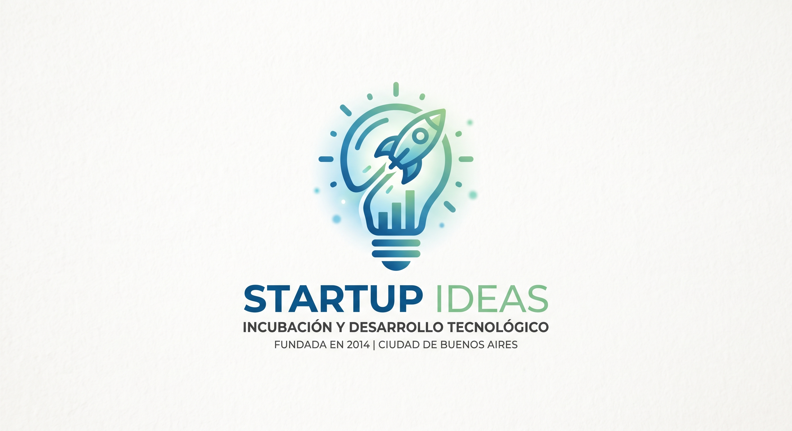

StartUp Ideas
StartUp Ideas es un espacio de incubación y desarrollo de proyectos tecnológicos, orientado a acompañar a emprendedores en las primeras etapas de sus negocios. Fundada en 2014, ofrece asesoramiento en comunicación, marketing y estrategia a startups en crecimiento, además de organizar eventos y encuentros para conectar emprendedores con inversores. Cuenta con un equipo reducido y multidisciplinario, con sede en la Ciudad de Buenos Aires.

Informacion General
- Puesto: Asistente de Comunicación
- Desde: Junio 2017
- Hasta: Diciembre 2018